Analiza 2
jun '95
smer: N, V; asistent: V. Grujic
1. a) Razviti funkciju ƒ(x) = |cos ax| u Furijeov red.
b) Naci sumu reda  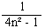.
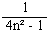.
c) Naci sumu h(x) = 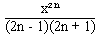
i proveriti rezultat pod b).
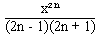
i proveriti rezultat pod b).
2. a) Odrediti povrsinu i zapreminu tela ogranicenog povrsima:
G1: x² + y² +
z² = 2, G2: x²
+ y² + z² = 6, G3:
x² + y² = z
b) Izracunati 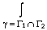(y² + z²)dx + (x² + z²)dy + (x² + y²)dz, neposredno i pomocu formule Stoksa.
3. a) Izracunati J(a, b) = ln
(a² cos² x + b²
sin² x) dx.
ln
(a² cos² x + b²
sin² x) dx.
b) Izracunati: K1(a,
b) = 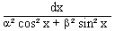,
K2(a, b) =
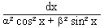,
K2(a, b) = 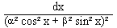,
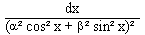,
I1(a, b) = ln
cos x dx, I2(a, b) =
ln
cos x dx, I2(a, b) = ln
sin x dx.
ln
sin x dx.
4. Izracunati w1 = (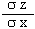)² + (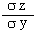)² i w2 = 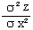 + 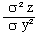, x = rcosj, y = rsinj.
5. z = c - ( +
+
 ), c > 0.
(zapreminu?)
), c > 0.
(zapreminu?)